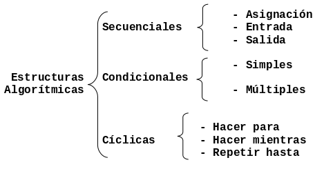

Programación Estructurada
En este Capítulo se describen los diferentes paradigmas de programación que existen, haciendo énfasis en las características de la programación estructurada.
Programación Estructurada
Las estructuras de control o estructuras algorítmicas permiten modificar la secuencia de ejecución de las instrucciones de un algoritmo o programa. Estas estructuras se clasifican de acuerdo con su complejidad como se describe en la siguiente Figura:

El término programación estructurada se refiere, a un conjunto de técnicas que han ido evolucionando desde los primeros trabajos del holandés Edsger Dijkstra. En mayo de 1996, Corrado Böhm y Giuseppe Jacopini demostraron que un programa propio puede escribirse utilizando sólamente tres tipos de estructuras de control: secuenciales, condicionales y cíclicas. A esto se le llama teorema de la programación estructurada.
Un programa se define como propio si cumple lo siguiente:
- Posee un sólo punto de inicio y uno de fin.
- Existe al menos un camino desde el inicio hasta el fin que se puede seguir y que pasa por todas las partes del programa.
- Todas las instrucciones son ejecutables y no existen lazos o ciclos infinitos.
Paradigmas de Programación
Dependiendo de las técnicas y del lenguaje de programación que se elija, se puede hablar de paradigmas de programación. Los principales son:
- Programación Estructurada. Esta programación utiliza un número limitado
de estructuras de control, reduciendo así considerablemente los errores.
Esta técnica incorpora:
- El uso de tres tipos de estructuras básicas:
- Estructuras secuenciales.
- Estructuras selectivas.
- Estructuras repetitivas. Un programa esta estructurado si posee un único punto de entrada y sólo uno de salida, existen de "1 a n" caminos desde el principio hasta el fin del programa.
- El uso de tres tipos de estructuras básicas:
- Programación modular. La programación modular consta de varias secciones dividas de forma que interactúan a través de llamadas entre las secciones (procedimientos o funciones) que integran el programa en su totalidad. En la programación modular, el programa principal coordina las llamadas a los módulos secundarios y pasa los datos necesarios en forma de parámetros. A su vez cada módulo puede contener sus propios datos y llamar a otros módulos.
- Programación Orientada a Objetos. El elemento principal de la programación orientada a objetos es el objeto. El objeto es un conjunto complejo de datos y programas que poseen estructura y un comportamiento definidos.